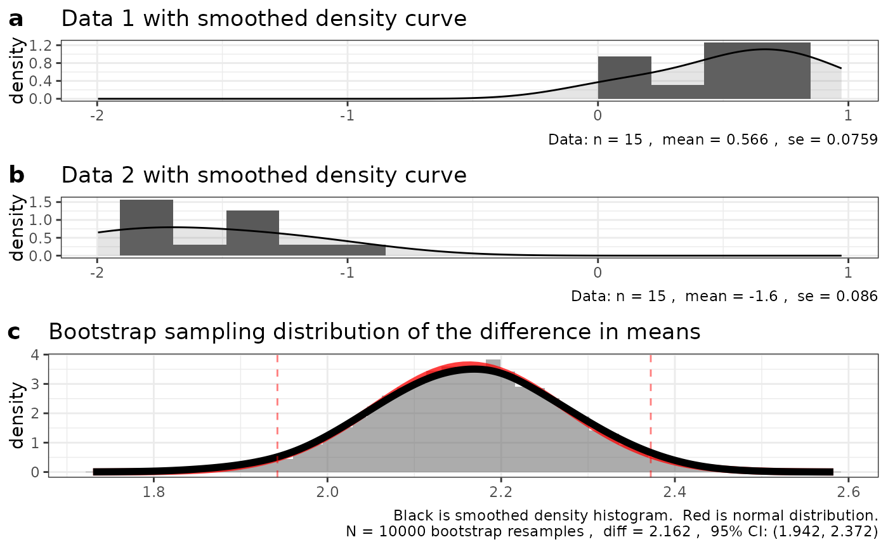

R/e_plot_bs_two_samp_diff_dist.R
e_plot_bs_two_samp_diff_dist.RdA function to compare the bootstrap sampling distribution of the difference of means from two samples with a normal distribution with mean and SEM estimated from the data
invisible(NULL)
e_plot_bs_two_samp_diff_dist(dat1 = runif(15), dat2 = runif(15) - 2, sw_graphics = "base")
e_plot_bs_two_samp_diff_dist(dat1 = runif(15), dat2 = runif(15) - 2, sw_graphics = "ggplot")
#> Warning: Removed 2 rows containing missing values or values outside the scale range
#> (`geom_bar()`).
#> Warning: Removed 2 rows containing missing values or values outside the scale range
#> (`geom_bar()`).
